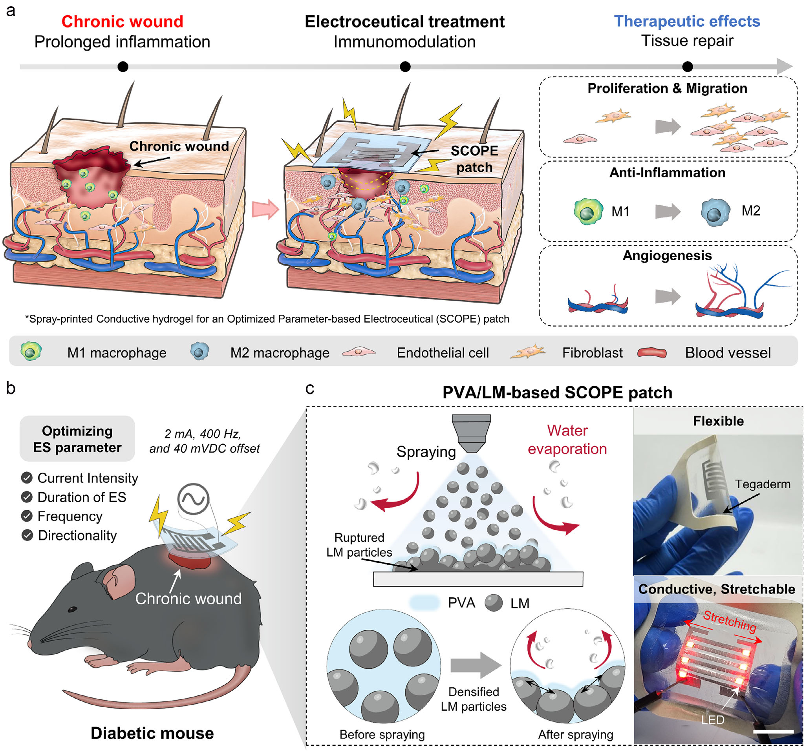

Research context and placement
Locally read stimulation, inflammatory-marker and diabetic-wound evidence directly fits host immune response. Conductive stability under deformation/hydration is verified, but the primary classification remains therapeutic response with a tissue-contact cross-link.
Research background
Conductivity alone does not determine wound-stimulation outcomes. Direction, waveform, tissue contact and immune timing all matter. SCOPE links cell-level stimulation screening to a conductive patch and subsequent animal wound assessment.
Approach and advances
The sprayed PVA/liquid-metal structure accommodates deformation while supporting electrical contact. Stimulation conditions selected through macrophage assessments are then linked to device use. Mechanical compliance and biological response to a waveform remain separate validation steps.

Preclinical overview linking electrical-stimulation parameter screening with spray printing of the SCOPE patch.
Jung Hyun Kim, Soo A Kim, Seung Hyun Lee et al.. “Optimized Electrical Stimulation Using a Spray‐Printed Conductive Electroceutical Patch for Accelerated Wound Healing in Diabetic Mice”. Figure 1. DOI: 10.1002/adhm.202504939. CC BY 4.0. A standalone extraction of the single embedded figure JPEG was copied byte-for-byte. No rendering, cropping, annotation or color-space conversion was performed.
Source figure and caption ↗ · DOI: 10.1002/adhm.202504939 ↗ · CC BY 4.0 ↗
Evaluation and conditions
Cell experiments precede dorsal-wound tests in STZ-induced type-1 diabetic mice. Waveforms, exposure duration and unstimulated controls are needed to distinguish patch effects from stimulation. Main-text mentions of the supplementary unstimulated-patch control were not independently rechecked in SI.
Key findings
Wound and tissue responses accompany changes in immune markers. CD86 reduction was significant, whereas the CD206 increase was a nonsignificant trend. These observations should remain marker- and time-specific rather than becoming a blanket claim of M1-to-M2 conversion.
Limits and open questions
Evidence is bounded to the tested cells and diabetic mouse wounds. Wired controlled stimulation does not establish unrestricted wearability or human benefit. Numerical wound-area/closure interpretation remains withheld pending reconciliation of the reported labels.
Related external research
Wireless, closed-loop, smart bandage with integrated sensors and stimulators for advanced wound care and accelerated healing
DOI: 10.1038/s41587-022-01528-3 ↗
The comparator integrates temperature/impedance-responsive closed-loop stimulation; SCOPE emphasizes parameter screening and a deformable patch.
Different models, stimulation doses and feedback prevent direct healing-rate ranking.
Abstract checkedCorresponding-author verification
Jungmok Seo: corresponding authorThis record concerns Jungmok Seo’s correspondence designation. Author order or an asterisk alone is not treated as confirmation; this check is separate from verification of the research content.
- Correspondence evidence source ↗
Correspondence: Jungmok Seo; Jung Seung Lee
Published PDF page 1: correspondence/author information; title and DOI page 1 · local_published_pdf_read
- Main-text review scope
- Read selected text, conclusion and animal-assessment methods on pages 1, 5, 7, 10–12 and 15 of the title/DOI-matched published PDF; rechecked pages 10–12 and 15 in this task. Publisher web checks covered authors, abstract, Figure 1 caption and copyright correction.
- Supplementary review scope
- Supporting information was not comprehensively read. A main-text citation to supplementary results does not count as direct inspection of those results.
- Pending verification
- Before publishing a quantitative wound-healing summary, reconcile Figure 6 normalized metrics, source data and SI, and verify actual delivered dose by waveform and the control definitions. This draft is not a clinical treatment guideline.
COVERAGE & OUTREACH
Coverage and outreach
Links are checked for their relationship to this paper. Media publication does not establish independent reporting or additional experimental validation.
Bioadhesive hydrogels and the SCOPE electroceutical patch — Jungmok Seo의 연구 소개 ↗
The later section describes the SCOPE spray-printed conductive electroceutical patch, optimized stimulation in diabetic mice, first authors Jung Hyun Kim and Soo A Kim, and collaboration with Jung Seung Lee, matching #88.
Body read The public post body was read. Review #98 is distinguished from the later discussion of experimental SCOPE paper #88. Only a relative time (23h) was visible, so the date remains unconfirmed.
Sources and verification scope
Read selected text, conclusion and animal-assessment methods on pages 1, 5, 7, 10–12 and 15 of the title/DOI-matched published PDF; rechecked pages 10–12 and 15 in this task. Publisher web checks covered authors, abstract, Figure 1 caption and copyright correction.
The additional commentary is editorially approved within the stated evidence scope. This does not imply complete verification of all main-text and supplementary material.
- Additional main-text review scope
- Read selected text, conclusion and animal-assessment methods on pages 1, 5, 7, 10–12 and 15 of the title/DOI-matched published PDF; rechecked pages 10–12 and 15 in this task. Publisher web checks covered authors, abstract, Figure 1 caption and copyright correction.
- Additional supplementary review scope
- Supporting information was not comprehensively read. A main-text citation to supplementary results does not count as direct inspection of those results.
- Public publication baseline ↗ · #88 · 2026-10-03
- Crossref metadata ↗: This Crossref entry records a public bibliographic metadata check. The actual abstract, main-text and supplementary reading scope is documented separately on this page; a metadata check does not establish full-text reading or a complete main-text and supplementary audit. license_urls lists registered links and does not establish permission to redistribute text or figures. It may include TDM or posting-policy links.
- Optimized Electrical Stimulation Using a Spray-Printed Conductive Electroceutical Patch for Accelerated Wound Healing in Diabetic Mice ↗
public_publisher_abstract · ABSTRACT; checked 2026-10-03 - Optimized Electrical Stimulation Using a Spray-Printed Conductive Electroceutical Patch for Accelerated Wound Healing in Diabetic Mice ↗
publisher_registered_abstract_via_Crossref · Crossref response message.abstract, title and DOI; read 2026-10-03; distinguished from direct publisher-site access. - Wireless, closed-loop, smart bandage with integrated sensors and stimulators for advanced wound care and accelerated healing ↗
public_external_abstract · Abstract and DOI metadata; read 2026-10-03. - Optimized Electrical Stimulation Using a Spray-Printed Conductive Electroceutical Patch for Accelerated Wound Healing in Diabetic Mice ↗
locally_held_publisher_PDF_selected_full_text · Locally held published PDF; title and DOI matched on p. 1. Selected text: p. 5 (§2.2), p. 7 (§2.4), pp. 10–12 (§2.6 and surrounding device discussion), p. 12 (§3 Conclusion), p. 15 (§4.14–4.16). SI not read. Published PDF carries a 9 May 2026 copyright-line correction. Checked 2026-10-03. - Optimized Electrical Stimulation Using a Spray‐Printed Conductive Electroceutical Patch for Accelerated Wound Healing in Diabetic Mice ↗
local_published_pdf_selected_full_text_read · PDF pp. 1–2: abstract/introduction; p. 12: conclusion - Optimized Electrical Stimulation Using a Spray‐Printed Conductive Electroceutical Patch for Accelerated Wound Healing in Diabetic Mice ↗
local_published_pdf_selected_full_text_read · PDF pp. 7 and 10: patch fabrication and mechanical/hydration discussion; p. 12: conclusion - Optimized Electrical Stimulation Using a Spray‐Printed Conductive Electroceutical Patch for Accelerated Wound Healing in Diabetic Mice ↗
local_published_pdf_selected_full_text_read · PDF pp. 10–12: §2.6 and Figure 6 caption; p. 15: §4.14–4.16 - Optimized Electrical Stimulation Using a Spray‐Printed Conductive Electroceutical Patch for Accelerated Wound Healing in Diabetic Mice ↗
local_published_pdf_selected_full_text_read · PDF p. 12: CD86/CD206 quantitative interpretation adjacent to Figure 6 - Optimized Electrical Stimulation Using a Spray‐Printed Conductive Electroceutical Patch for Accelerated Wound Healing in Diabetic Mice ↗
local_published_pdf_selected_full_text_read · PDF p. 12: wired-system and volumetric-tissue limitations; pp. 11–12: wound area/closure wording - Optimized Electrical Stimulation Using a Spray‐Printed Conductive Electroceutical Patch for Accelerated Wound Healing in Diabetic Mice ↗
independent_reviewer_selected_main_text · Title/DOI-matched locally held published PDF pp.1,5,7,10–12,15; immune-marker results and STZ mouse methods - Additional commentary source ↗
Research background · PDF pp. 1–2: abstract/introduction; p. 12: conclusion · local_published_pdf_selected_full_text_read - Additional commentary source ↗
Approach and advances · PDF pp. 7 and 10: patch fabrication and mechanical/hydration discussion; p. 12: conclusion · local_published_pdf_selected_full_text_read - Additional commentary source ↗
Evaluation and conditions · PDF pp. 10–12: §2.6 and Figure 6 caption; p. 15: §4.14–4.16 · local_published_pdf_selected_full_text_read - Additional commentary source ↗
Key findings · PDF p. 12: CD86/CD206 quantitative interpretation adjacent to Figure 6 · local_published_pdf_selected_full_text_read - Additional commentary source ↗
Limits and open questions · PDF p. 12: wired-system and volumetric-tissue limitations; pp. 11–12: wound area/closure wording · local_published_pdf_selected_full_text_read - Additional commentary source ↗
Connections to related work · Abstract; title and DOI; prior evidence verification reused · public_external_abstract_read - Additional commentary source ↗
Connections to related work · PDF p. 12: wired-system limitation · local_published_pdf_selected_full_text_read